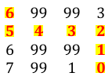

The robot read in a .txt file, containing an 8x8 arrary with the topological map encoding. The array contained integers to represent different configuations the robot could encounter, as shown below.
Similarily, the robot could recieve the same size file, but this time containing only 0s and 99s. The 0s were used to represent an open space, while the 99s were used to represent a space were an obstacle was present. Using the Wavefront algorithm, the occupancy grid was able to be populated to give the robot a plan to its goal location. The wavefont algorithm resulted in the following, with the robot's starting location in the upper-left hand corner and its goal location in the bottom right corner.
A finite state machine was implemented to use the topological map. The sensor data from the lidar sensors were used to tell the robot which state it was in. When an object was detected, it was mapped to the following state below. The data was averaged over 7 readings to help correct for possible sensor error.
When the robot was given a start and goal location on the GUI, the robot was able to navigate the obstacles, as shown in the video below. Since the obstacles were not perfect, mutiple sensors were used to ensure the robot's success. The robot's front, back, right, and left lidar sensor were all used, along with closed loop proportional control to stop the robot from hitting any obstables. These sensors helped correct the error that was introduced when the robot turned a corner. Wheel encoders were used calculate determine when the robot had reached its desired angle.
The graphical user interface shown below was implemented in Python using the Tkinter library. On the left, the GUI contains buttons for sending commands to the robot and displays sensor data from the robot. On the right, maps of the world are displayed. The bottom map is the topological map of the world, and the top center map is the occupancy grid of the world. When a start and end goal is sent to the robot using the “Go to Goal” button, the map on the top right updates using wavefront expansion to display the metric path plan the robot will take to reach the goal. Wireless communication was implemented with the HC-06 Bluetooth module. The laptop and HC-06 communicated over the Bluetooth serial port communication. Serial port communication was also used to allow the GUI to commuticated with the C++ algorithms, which controlled the robot.